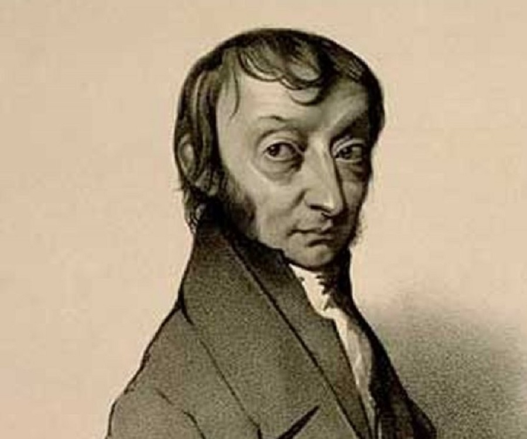
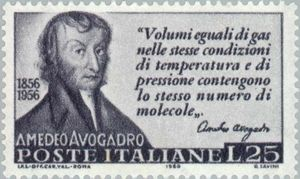

Amedeo Avogadro's Biography

Amedeo Avogadro was born in Turin, the son of Cavaliere Philippo Avogadro and Anna Vercellone di Biella. His father was a descendant of an ancient family with a long history in the legal profession.
Avogadro received a degree in philosophy in 1789, and a baccalaureate in law in 1792. He was awarded a doctorate in ecclesiastical law at the early age of 20. He then established a legal practice that he kept until about 1800, when he began doing research in physics. In 1809, he won an appointment as professor of physics at the Royal College Academy at Vercelli.
He submitted his first paper with his brother, Felice, on electricity to the Academy of Sciences in Turin in 1803. In 1804, he was elected a corresponding member of that body.
In 1808, he published, "Considerations on which the state of non-conducting matter must be, when interposed between two surfaces endued with opposite electricities."
The memoir for which he is best known, and in which he postulated his important hypothesis—that equal volumes of gas are composed of equal numbers of molecules—was published in 1811. He continued to improve on the exposition of his theory in additional memoirs.

In 1820, Victor Emanuel I, the king of Sardinia, created a chair for mathematical physics at the University of Turin. Avogadro was appointed to that position, which he held until 1822, when it was dissolved due to the political ferment of the time. As Avogadro's accomplishments had won him respect beyond his political activity, he was granted the title of professor emeritus, for which he received an annual salary of 600 lire.
In 1832, the chair was re-instituted, but was occupied in its first two years by the famous mathematician Augustin-Louis Cauchy. In the third year of its new life, the position was given to Avogadro, who held it until 1850, when upon his retirement, it was occupied by his student, Felice Chio.
In 1840, he attended an important scientific congress in Turin, but failed to receive significant recognition.
Avogadro and his wife, Donna Felicita Mazzi, had six sons. One became a general in the Italian Army. Another was president of the Court of Appeals. Avogadro held many public positions dealing with scientific matters, including national statistics, weather, and standards of measurement. He became a member of the Superior Council on Public Instruction in 1848. In 1853, Avogadro submitted a final paper to the Turin Academy of Sciences on the behavior of gases subjected to different degrees of compression.
Amedeo Avogadro's Personal Life
Avogadro married Felicita Mazzé of Biella in 1815; together they had six children. Home-loving, industrious, and modest, he rarely left Turin. His minimal contact with prominent scientists and his habit of citing his own results increased his isolation. Although he argued in 1845 that his molecular hypothesis for determining atomic weights was widely accepted, considerable confusion still existed over the concept of atomic weights at that time. Avogadro’s hypothesis began to gain broad appeal among chemists only after his compatriot and fellow scientist Stanislao Cannizzaro demonstrated its value in 1858, two years after Avogadro’s death. Many of Avogadro’s pioneering ideas and methods anticipated later developments in physical chemistry. His hypothesis is now regarded as a law, and the value known as Avogadro’s number (6.022140857 × 1023), the number of molecules in a gram molecule, or mole, of any substance, has become a fundamental constant of physical science.
Avogadro died in Turin in 1856.
Source: http://www.newworldencyclopedia.org/entry/Amedeo_Avogadro